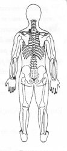

Atitude: pretensão (ou tentar) - Quinta profundidade - Desarmonia do fluxo do coração.
|
Energia da Função do Coração.
Nasce da função do Baço. Período entre as 12 e 14 horas. O fluxo do Coração emerge da quinta profundidade e recebe maior quantidade de energia no verão.
O corpo está no coração como o carvalho está no seu fruto.
E nvolver o dedo mínimo com a outra mão. ou
M.e. na parte superior das costas abaixo da junção do pescoço com o ombro esquerdo TSE 11; ®
M.d. sobre a face externa do pulso do lado do dedo mínimo esquerdo TSE 17. ® |
 |
Notas:1 - M.d. = mão direita M.e. = mão esquerda.2 - O texto sublinhado indica que pode ser feito usando alternadamente o lado direito (mão direita) e depois o lado esquerdo (mão esquerda). 3 - Tocar a área indicada, com a ponta dos dedos da mão, durante alguns minutos ou até sentir uma pulsação rítmica. Não precisamos nos preocupar em demasia com a precisão da área indicada, pois cada trava de segurança da energia tem uma abragência de uns sete centímetros em torno de si.